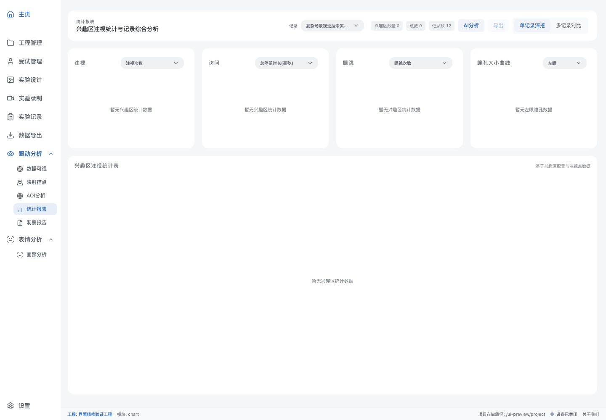

<!doctype html><html lang="zh-CN"><meta charset="utf-8"><meta name="viewport" content="width=device-width,initial-scale=1"><title>下拉框间距修正</title><style>*{box-sizing:border-box}body{margin:0;background:#f5f6f7;color:#292b30;font:14px -apple-system,BlinkMacSystemFont,"Segoe UI",sans-serif}header{display:flex;align-items:center;flex-wrap:wrap;gap:16px;padding:18px 24px;background:#fff;position:sticky;top:0}h1{font-size:16px;margin:0}p{margin:5px 0 0;color:#6b6e76;font-size:12px}.tools{display:flex;gap:6px;margin-left:auto}button{border:0;border-radius:8px;padding:8px 12px;background:#f0f1f3;color:#565a63;cursor:pointer}button[aria-pressed=true]{background:#326bb5;color:white}main{padding:16px}img{display:block;width:100%;height:auto;border-radius:12px}a{color:inherit;text-decoration:none}button:focus-visible{outline:2px solid #326bb5;outline-offset:2px}</style><header><div><h1>下拉框间距修正</h1><p>文字左侧 12px · 箭头独立留白 · 长名称悬停可查看全文 · 截图使用隔离示例数据</p></div><div class="tools" aria-label="主题"><button data-theme="modern-light" aria-pressed="true">浅色</button><button data-theme="dark" aria-pressed="false">深色</button></div><div class="tools" aria-label="对照"><button data-state="before" aria-pressed="false">修正前</button><button data-state="after" aria-pressed="true">修正后</button></div></header><main><a id="full" href="modern-light-after.png" target="_blank"></a></main><script>let theme='modern-light',state='after';document.querySelectorAll('button').forEach(button=>button.addEventListener('click',()=>{if(button.dataset.theme)theme=button.dataset.theme;if(button.dataset.state)state=button.dataset.state;document.querySelectorAll('[data-theme]').forEach(b=>b.setAttribute('aria-pressed',b.dataset.theme===theme));document.querySelectorAll('[data-state]').forEach(b=>b.setAttribute('aria-pressed',b.dataset.state===state));const src=theme+'-'+state+'.png';document.getElementById('preview').src=src;document.getElementById('preview').alt=(theme==='dark'?'深色':'浅色')+'模式'+(state==='after'?'修正后':'修正前')+'的统计报表下拉框';document.getElementById('full').href=src}));</script></html>